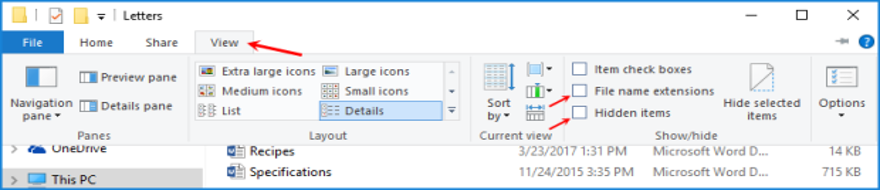
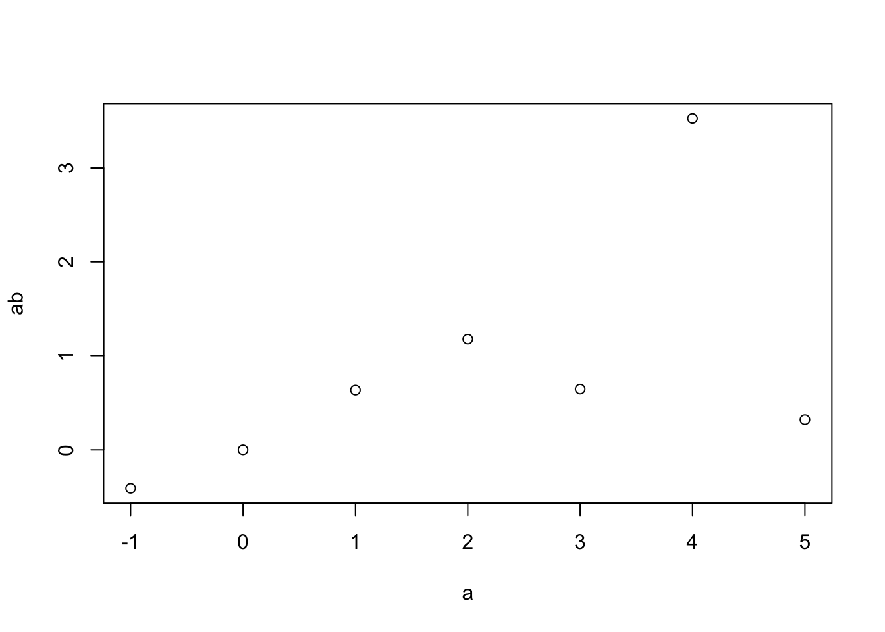
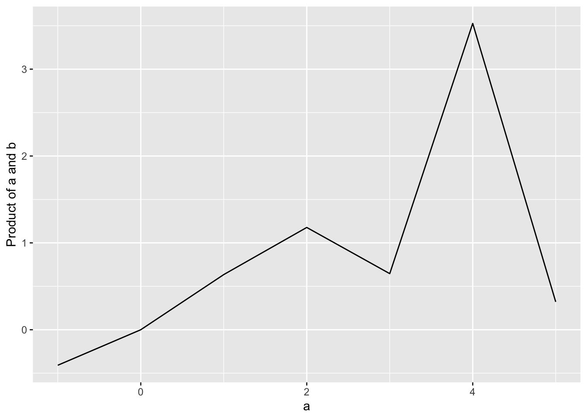

getwd()[1] "/Users/stevenmh/Courses/intro_to_ecology"In this project, you will begin to use tools for data exploration and analysis. This tools and your computer are really important for helping you make sense of our really complicated world. Ecology is way more complicated than physics or engineering, and the data are noisy and often unpredictable. We need to use computers to make sense of it.
We will use open source and free software to help us understand ecological systems. You will download and install R, known formally as the R programming language and environment. You will also install RStudio, an integrated development environment (IDE), designed to be used with R. The R interface looks a little different on Windows, Macs, and Linux computers. RStudio will allow us all share an identical appearance and user experience. You will use R by opening RStudio.
First, we need to make sure we know some basics about computers.
On your computer,
If you have not already done so, you need to organize your computer.
Do these:
In addition,
Watch one of these to help you understand how your computer is organized. This will save you hours of time and frustration throughout your life.
File extensions are little tags at the end of file names taht identify the type of file it is. You will need to be able to see file extensions on your computer. A file extension is the little label at the end of a file name that comes after the dot, such as
Note that, by default, Windows hides these from the user. Here is how we fix that on Windows. (Mac users can skip this.)
On Windows 10, you need to make changes to see file extensions by revealing “hidden items”. Windows 10:


You should now be able to see file name extensions (e.g., .docx, .R) and hidden files.
Armed with a little knowledge of your computer, you now install R.
We will use the Open Source R programming language and environment for doing science, including,
You need to download the application to get started.
The following videos might be useful, but they are not required! The next sections describe (in words) how to install R and RStudio.
Optional videos:
RStudio is an integrated development environment (IDE), designed to be used with R. The R interface looks a little different on Windows, Macs, and Linux computers. RStudio will allow us all share an identical appearance and user experience.
RStudio is an interface to R. When we use R in this class, we will use RStudio as our interface, but you need to realize that we are primarily using R. We don’t need RStudio to do the work, but it makes my job as instructor easier, and makes it a little easier for you as well. So, when you start to use R, just open RStudio, and it will load R for you.
In this class, you will use the English language to write about ecology, and the R language to explore and analyze ecological data.
Set up a folder for this class. Call it “BIO209W”. Do not name it “BIO_209W” or “Bio209W” or “ecology”. Just “BIO209W”. It will help us. I don’t really care where you put this folder, but you should have a place for all of your classes, and you could put it there. Don’t put it in “Downloads”.
Next, set up a subfolder inside BIO209W called “Rwork”. Do not call it “RWORK” or “R_work” or anything else - just “Rwork”. It will help us. A lot. Rwork will be your working directory, which is where R looks automatically for data and where it automatically puts output.
To work in R in this class, we will open RStudio. It will open R for you.
In this section, we learn what the “working directory” is and how to set it.
Your working directory is where R looks to find stuff by default. R can look anywhere you tell it to, but it looks automatically in your “working directory”.
In this class, you should always use “Rwork” as your working directory.
I can find out where my working directory is by using getwd() to get my working directory:
getwd()[1] "/Users/stevenmh/Courses/intro_to_ecology"This tells me what R is using as my working directory right now. My current working directory will differ from yours.
You should run this code, and see what you get. What do you get when you run this code (getwd())?
Next, use the “Session” in pulldown menu in RStudio to Set Working Directory and then Choose your working directory and always choose Rwork (which should be inside BIO209W).
RStudio allows you to organize your work in projects. Here we create a new project that we will call Rwork.
This requires that you already have a folder called “BIO209W” and a subfolder in that called “Rwork”.
RStudio will now shift the working directory to your Rwork directory. You can see evidence of this: in the upper right pane which should have Rwork identified in the upper right corner, or in the lower right pane in the Files tab.
From now on in this course, make sure that you are using this project. You can open R by clicking the “Rwork.proj” file in your Rwork directory, or opening RStudio, and selecting the Rwork project in the upper right corner.
Goal: Write a script in R and learn several important programming operations.
After you have prepared your computer as above, you are ready to begin exploring and modeling data. We do that using scripts.
A script is a plain text file that contains the code and and your own comments that you use to address your questions.
The following steps will let you accomplish the goal of this section. The video above showed me opening R with RStudio, and starting a new script.
Writing comments Anything following a hashtag (#) is a comment and R ignores it. You and I will use lots of comments to ask questions of ourselves, and to describe what we are trying to do.
## My first R script in BIO 209W Spring 2023
## [add your name]ALL OF THE WORK YOU DO SHOULD BE IN A SCRIPT.
To enter code, place your cursor on any line in the script, and type, like this.
-1:5To run code, simply place you cursor anywhere on a line of code and hit Control-Enter or Control-Return or Command-return (Mac).
Try it with this:
-1:5[1] -1 0 1 2 3 4 5This will pop up in the Console, which is the lower left pane in RStudio.
What did this create? Do you get what I got above?
W?hen we create something, we typically want to assign it to a labeled object. In this class, we will use an arrow to indicate that we are putting a creation into an object. We create the arrow on our keyboard using shift-comma and a dash (‘less than’ and a dash)
a <- -1:5This puts the series of integers from -1 to 5 into the object a.
If we have an object, like a, how can we figure out what it is? There are several ways of doing that. The simplest is to “print” it out. This doesn’t mean that we print it on paper. Rather we are printing it to the console, like this:
# show or 'print' a
a[1] -1 0 1 2 3 4 5Another way is to look at its “structure”:
str(a) int [1:7] -1 0 1 2 3 4 5This tells us that this is a vector of integers that is 7 elements long.
Another way is to look in the RStudio Environment pane in the upper right hand side of RStudio.
If you are not used to writing code (and nobody is born that way), here are some thing to keep in mind about R and about coding in general.
str(a) unless you previously defined a, such as a <- -1:5 (this is because R is an interpreted language - R interprets it one line at a time).a as something completely different than A.2+3 the same as 2 + 3.f <- 9 is a thing. The compound symbol <- means something different than < -.
<- is the assignment operator and assigns values to objects.< - means “less than, minus”, where 2 < -3 tests whether 2 is less than minus 3 (it isn’t).Try it.
f <- 9
f[1] 9Now f has the value of 9.
Try this:
2 < -3[1] FALSEThat tested whether 2 is less than -3.
Moving on….
Now let’s create a set of 7 uniformly distributed random numbers that are between 0 and 1.
b <- runif(7, min=0, max=1)
b[1] 0.20366385 0.59022893 0.08441556 0.12271363 0.24407806 0.43614139 0.73632568These will differ every time you do this.
Now we multiply each element in a times the corresponding elements in b.
# multiply a and b
ab <- a * b
## Show a, b, and ab
a[1] -1 0 1 2 3 4 5b[1] 0.20366385 0.59022893 0.08441556 0.12271363 0.24407806 0.43614139 0.73632568ab[1] -0.20366385 0.00000000 0.08441556 0.24542726 0.73223417 1.74456554
[7] 3.68162842You can confirm at a glance that the first and second elements in a times the first and second elements in b equal the first and second elements in ab.
We will use lots of data frames in this course. Think of a data frame as a kind of spreadsheet of data, in which every column has the same number of entries and every row is an observation comprising all of the variables across all the columns.
Here is one way to create a data frame. We assign variables using “=”.
d <- data.frame(a=a, b=b, a_times_b = ab)
d a b a_times_b
1 -1 0.20366385 -0.20366385
2 0 0.59022893 0.00000000
3 1 0.08441556 0.08441556
4 2 0.12271363 0.24542726
5 3 0.24407806 0.73223417
6 4 0.43614139 1.74456554
7 5 0.73632568 3.68162842You could examine the structure of this data frame with str().
str(d)'data.frame': 7 obs. of 3 variables:
$ a : int -1 0 1 2 3 4 5
$ b : num 0.2037 0.5902 0.0844 0.1227 0.2441 ...
$ a_times_b: num -0.2037 0 0.0844 0.2454 0.7322 ...You will also notice now that you can see all of our objects in the Environment pane, in the upper right of RStudio.
You can export data frames from R as well, and programmers call that “writing” a file. The command below will save our data frame as .CSV files that you could open in a spreadsheet application.
# export or write a file
write.csv(x=d, file="myDataframe.csv", row.names=FALSE)
# including row.names=FALSE prevents R from adding row names.This should cause the data frame d to get saved to your working directory. Did it work for you?
Now let’s plot some data, including both points and lines connecting them.
# type='p' is for points only
plot(a, ab, type='p') 
R is well known for its graphics capabilities, and we will only just scratch the surface in this course.
R is open source, and its strength derives in part from the thousands of scientists creating extensions or add-on packages to do particular tasks. By itself, R can do amazing things. With thousands of contributed packages (as they are known), R’s capabilities have exploded.
You can add a package in a few ways, including.
In this class, you will need to install several packages. Let’s try installing “ggplot2”.
install.packages("ggplot2")This will install ggplot2, and it will also install anything upon which ggplot2 depends. It will install all of its dependencies.
Once you have installed a package, it is on your computer for good. You do not have to install it again, although you may want to update it once in a while to stay current.
Now let’s use the plotting functions in the ggplot2 package.
To use a contributed package, we need to load it. This simply means waking it up, and putting its code in R’s working memeory. We do that with library().
library(ggplot2)Here we use ggplot() and geom_smooth() to plot our data, and add a fitted curve.
When we use ggplot(), we tell it the name of our data frame and the variables we want to use go inside aes(), which stands for “aesthetics”. We also begin to add bells and whistles.
## plot data and fit a curve
ggplot(data=d, aes(x=a, y=a_times_b)) +
geom_line() +
labs(x="a", y="Product of a and b")
Note that with ggplot, we use the plus sign (+) to add elements to our graph.
We can save this figure as well, in a variety of formats and sizes. By default, these are saved to our working directory, though we can change that if we want to.
ggsave("myPlot.png")Saving 7 x 5 in imageggsave("myPlot.jpg", width=7, height = 3)
ggsave("myPlot.pdf", width=3, height = 5)R has a bit of a learning curve. What should you do if you get stuck? It all depends what sort of problem it is.
?mean in the Console to get help on the function mean().)For the “First R script” assignment on Canvas:
myPlot.pngmyDataframe.csvCongratulations. C’est fini!